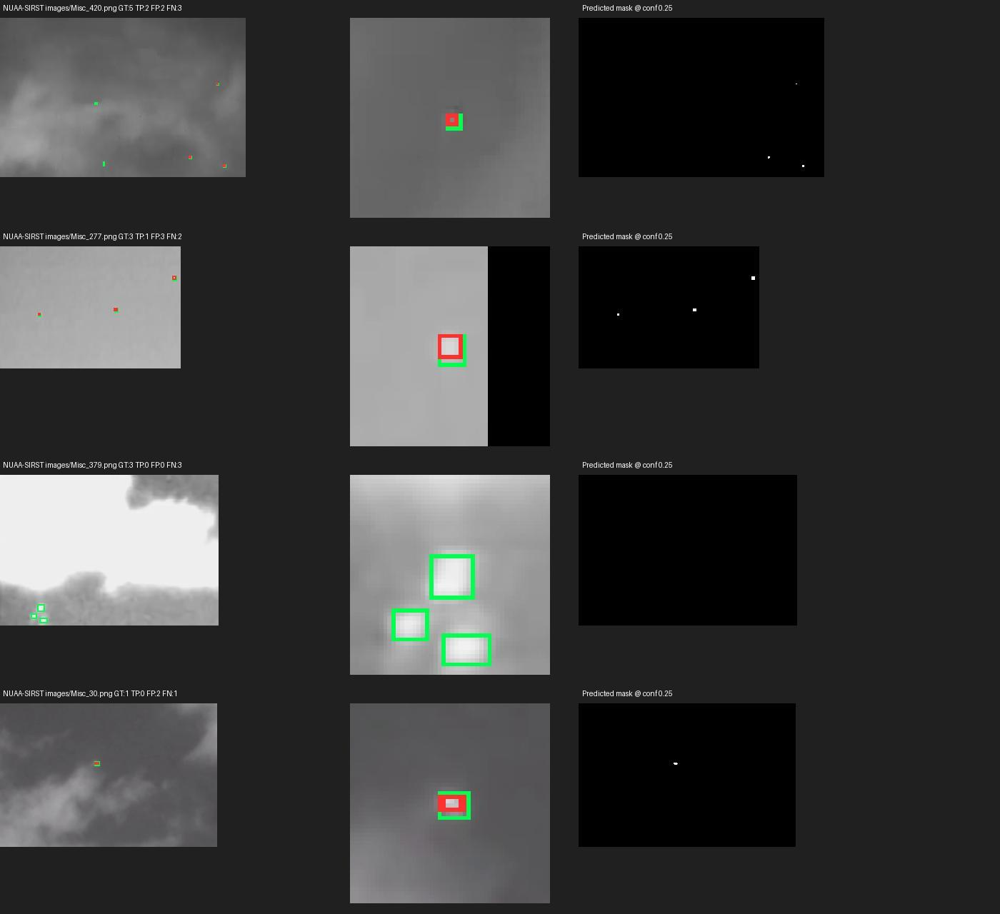
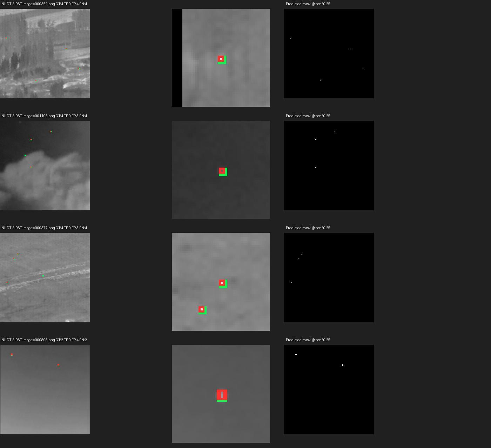

日期：2026-10-20。沿用前一轮的 YOLO26n 分割最佳权重，仅执行推理与评估，未重新训练。
从本地两套数据的 test 清单选取全部有效配对，共 877 张图。NUAA-SIRST 清单214张，其中1张图像/掩膜尺寸不一致被排除，实际213张；NUDT-SIRST 664张全部纳入。两套预测框均保持原始大小（pad=0）。
C:/Users/Kyson/Desktop/掩膜/all4_yolo26n_segment_best.pt，单类别 target。| 数据集 | 清单图片数 | 实际检测 | 排除 | 文件名与现有模型测试划分一致 | 测试文件名与训练/验证交集 |
|---|---|---|---|---|---|
| NUAA-SIRST | 214 | 213 | 1 | 是 | 0 |
| NUDT-SIRST | 664 | 664 | 0 | 是 | 0 |
测试清单分别位于本地数据集的 img_idx/test_NUAA-SIRST.txt 与 img_idx/test_NUDT-SIRST.txt。文件名无交集不等于彻底排除同源场景或变换后的关联；本次不把它当作完全独立跨域数据。
排除样本：NUAA-SIRST / Misc_111。 原图325×220，掩膜592×400，缺少可信的空间对应关系。未强行缩放掩膜或修改原数据；这张图不进入准确性统计。排除依据是配对质量，不是模型分数。详细路径见 排除样本.json。
| 数据集 | 图像 | 目标框 | AP50 | AP50–95 | Precision | Recall | F1 |
|---|---|---|---|---|---|---|---|
| NUAA-SIRST | 213 | 262 | 80.94% | 32.93% | 78.46% | 77.86% | 78.16% |
| NUDT-SIRST | 664 | 945 | 75.46% | 33.65% | 63.49% | 76.72% | 69.48% |
| 数据集 | TP 正确检测 | FP 误检 | FN 漏检 |
|---|---|---|---|
| NUAA-SIRST | 204 | 56 | 58 |
| NUDT-SIRST | 725 | 417 | 220 |
| 数据集 | mask AP50 | mask AP50–95 | 全局像素 IoU | 全局像素 Dice | 像素 Precision | 像素 Recall |
|---|---|---|---|---|---|---|
| NUAA-SIRST | 72.40% | 26.20% | 56.43% | 72.15% | 85.06% | 62.64% |
| NUDT-SIRST | 64.40% | 28.42% | 64.43% | 78.37% | 88.38% | 70.39% |
每张图均已保存可视化：绿色是真值框，红色是 conf≥0.25 的预测框，蓝色半透明区域为预测掩膜。预测掩膜 PNG 仅含0和255。
案例拼图前8张按工作点误检+漏检数量排序，后8张按测试清单均匀间隔抽取；拼图用于诊断，不代表随机抽样的总体表现。

全部逐图可视化 · 逐图指标 · 预测框 TXT · 完整案例图

全部逐图可视化 · 逐图指标 · 预测框 TXT · 完整案例图
指标汇总.csv：可用 Excel 打开的汇总，指标以0–1小数保存；本报告按百分比显示。指标.json：完整指标、模型 SHA256、设备、版本和运行参数。数据选取说明.json、排除样本.json、核验结果.json：划分、排除理由与结果一致性核验。results/<数据集>/predictions_bbox.json：COCO格式像素坐标框、分数，单类 category_id=1。prediction_txt/<原图名>.txt：固定工作点的 YOLO格式 class xc yc w h conf，class=0、坐标归一化。predicted_masks/<image_id>.png：预测掩膜并集；manifest.json 将 image_id 对应到原图路径。8d314abb8b9c11b298e357de3d25d88ba7f7955df7494ad51efbb1ff75d8d5bc。复现命令：
& "C:\Users\Kyson\anaconda3\envs\yolo26\python.exe" -X utf8 -u "C:\Users\Kyson\Desktop\检测结果\scripts\run_detection.py" NUAA-SIRST --box-pad 0
& "C:\Users\Kyson\anaconda3\envs\yolo26\python.exe" -X utf8 -u "C:\Users\Kyson\Desktop\检测结果\scripts\run_detection.py" NUDT-SIRST --box-pad 0